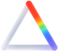

Sur Windows, une seule fenêtre à nous, sans question : elle installe, puis Prisme s’ouvre de
lui-même. Les mises à jour, elles, s’installent sans fenêtre. Sur Mac, la fenêtre de l’image
disque reçoit un fond dessiné : on glisse Prisme dans Applications, comme partout sur Mac.
Windows

prisme
Installation de Prisme…64 %
Pendant. Le prisme et le mot, comme au démarrage de Prisme. La barre se remplit
aux couleurs du prisme, une lueur la parcourt. La croix annule et retire ce qui a été
copié.
prisme
Prisme est installéOuverture…
Fini. Une seconde, puis la fenêtre s’efface et Prisme s’ouvre sur son écran de
démarrage : on passe de l’un à l’autre sans couture.
prisme
Prisme est ouvert : fermez-le pour mettre à jour.
Un souci. La raison en clair (Prisme ouvert, disque plein…) et ce qu’on peut y
faire, sans jargon.
Mac
Prisme
prisme
Prisme
Applications
Glissez Prisme dans Applications
L’image disque. Le fond (le mot, la lueur du prisme, la flèche et la phrase) est une
image ; les deux icônes sont celles que le Mac place dessus. Linux et Android installent
par le système, sans fenêtre à nous.